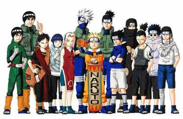
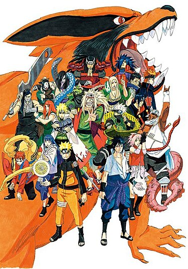

The Naruto (Japanese: ナルト) manga and anime series features an extensive cast of characters created by Masashi Kishimoto. The series takes place in a fictional universe where countries vie for power by employing ninja who can use special techniques and abilities in combat. The storyline is divided into two parts, simply named Part I and Part II, with the latter taking place two-and-a-half years after the conclusion of Part I. It is followed by the sequel series Boruto: Naruto Next Generations by Ukyō Kodachi, which continues where the epilogue of the first series left off. The series' storyline follows the adventures of a group of young ninja from the village of Konohagakure (Village Hidden in the Tree Leaves). The eponymous character of the first series is Naruto Uzumaki, an energetic ninja who wishes to become Hokage, the leader of Konohagakure and holds a demon fox called the Nine-Tails sealed in his body. During the early part of the series, Naruto is assigned to Team 7, in which he meets his long-time rival Sasuke Uchiha, a taciturn and highly skilled "genius" of the Uchiha clan; and Sakura Haruno, who is infatuated with Sasuke and has Naruto's attention and Kakashi Hatake, the quiet and mysterious leader of the team. Over the course of the series, seeking out Sasuke when he ran away from the village, Naruto interacts with and befriends several fellow ninja in Konohagakure and other villages. He also encounters the series' antagonists, including Orochimaru, a former ninja of Konohagakure scheming to destroy his former home, as well as the elite rogue ninja of the criminal organization Akatsuki who seek out jinchuriki like Naruto and Gaara for the tailed beasts.
 